Window Title: Mixer100.TrendPopup
Module 6 — Trend Visualization | Pages 401–422
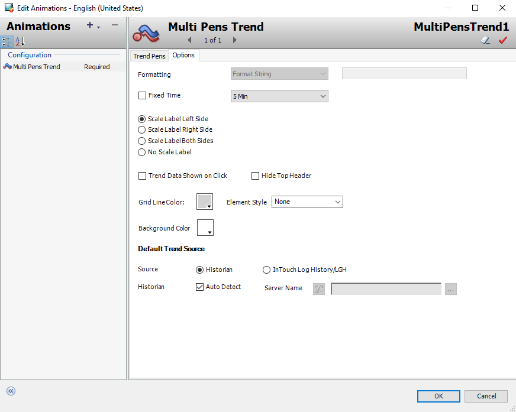
Configuration > Multi Pens Trend (Required)">

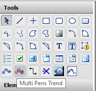

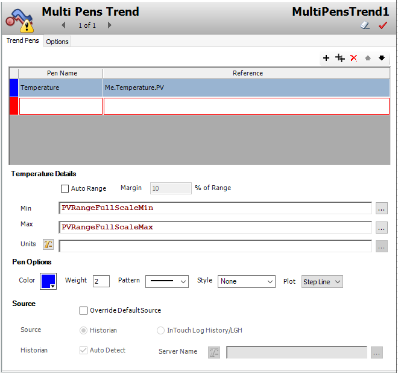
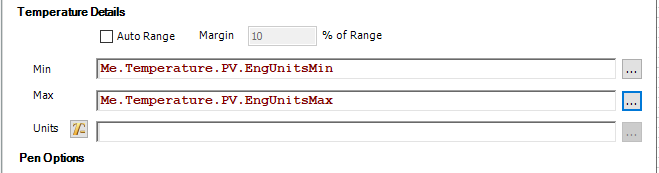
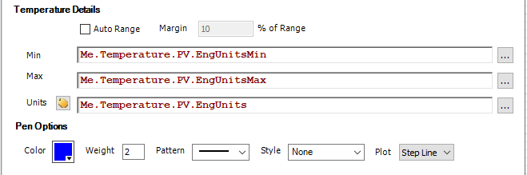
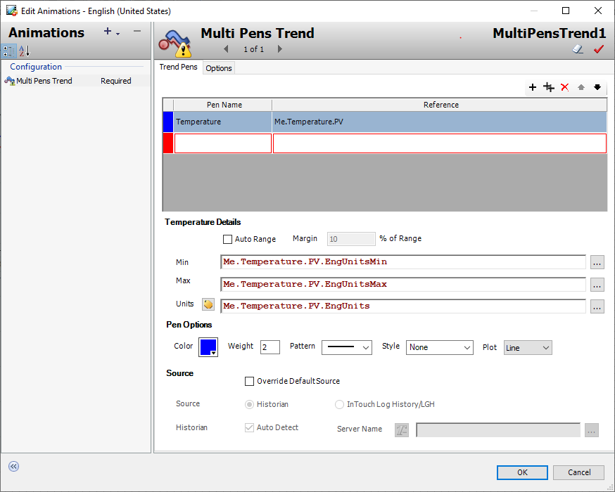

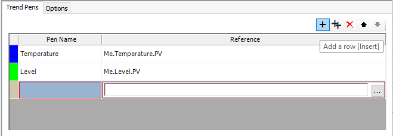

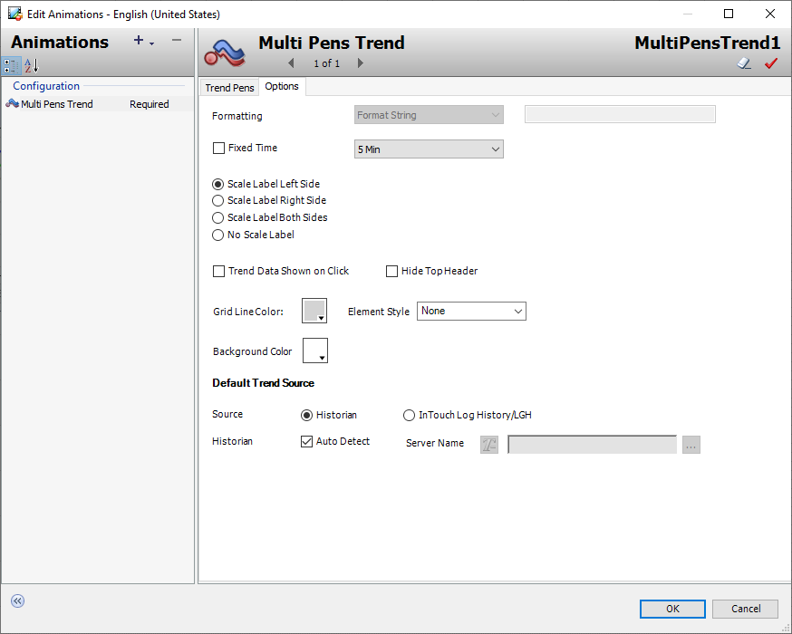

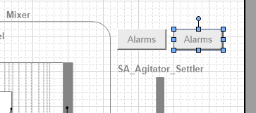

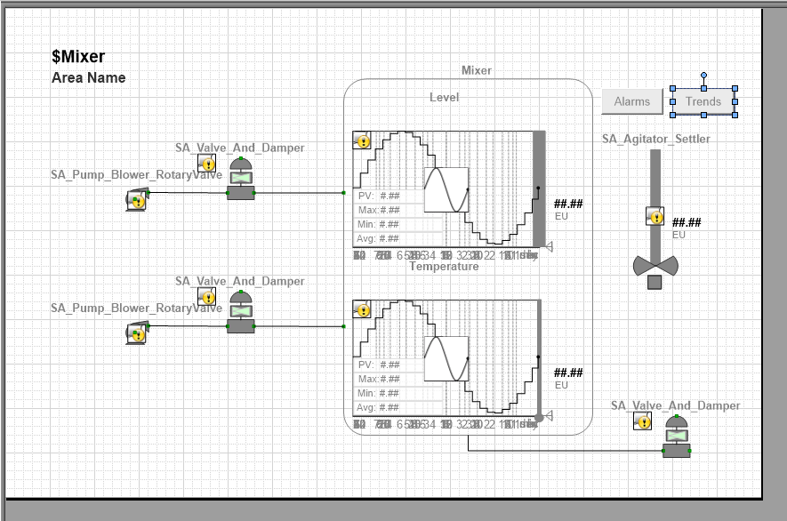

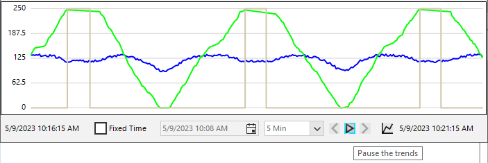
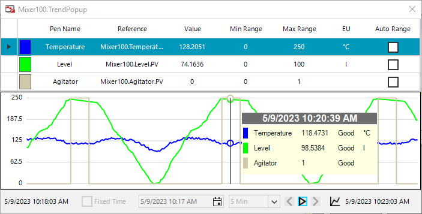

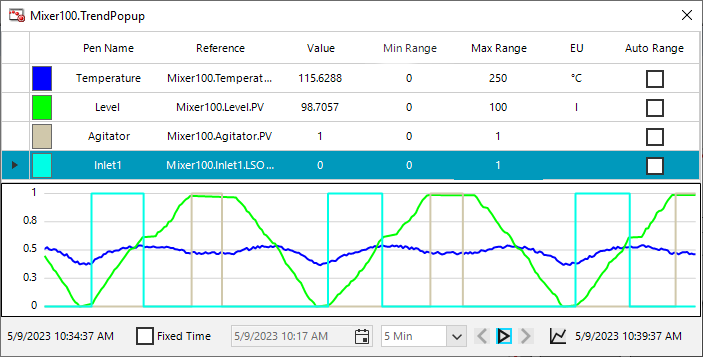
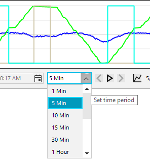
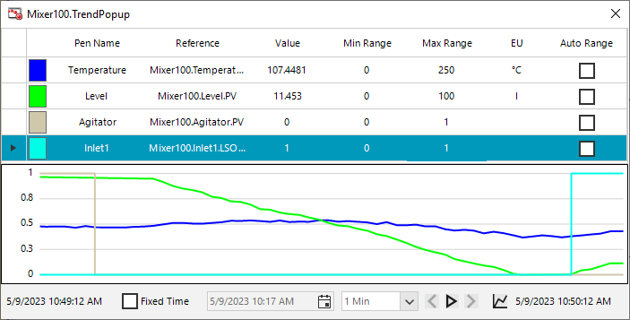
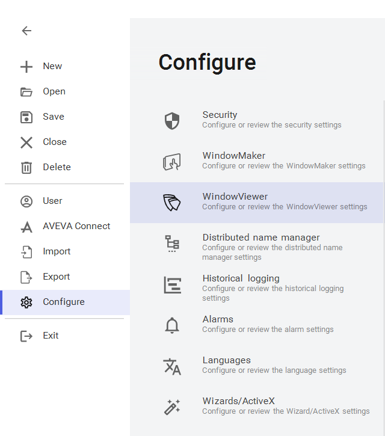

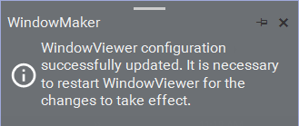

Do Not Copy Section 3 – Multi Pens Trend 6-21 AVEVA™ InTouch for System Platform 2023 This trend control allows you to configure the color, weight, pattern, style, and plot type for the selected pen, as well as customize the runtime display, such as formatting, scale, color, and other settings. The Fixed Time option determines whether a Date Time Picker is available for the start time of the trend at runtime or not. The time interval presents a list of duration to set for the trend. Further, the default historical configuration uses Historian as the trend source and will attempt to auto detect the Historian node.
Do Not Copy 6-22 Module 6 – Trend Visualization AVEVA™ Training Multi Pens Trend at Runtime At runtime, the Multi Pens Trend displays the trend chart. Pen information appears in the legend at the top. You can right-click in the legend to show options for showing, hiding, adding, or deleting pens from the runtime display. Chart options at the bottom allow you to change the time interval for the chart at runtime, as well as pause and start the trend. If Fixed Time is checked, you can set the start time at runtime. Multiple configuration changes can be made during runtime to enhance the operator’s experience. For example, a pen can be added to the trend at runtime. Changes made at runtime do not persist beyond the current runtime session, nor do these changes impact design time configurations. Once the Multi Pens Trend control is reloaded, all runtime changes are lost.
Do Not Copy Lab 18 – Creating a Trend Popup Symbol 6-23 AVEVA™ InTouch for System Platform 2023 Lab 18 – Creating a Trend Popup Symbol Introduction In this lab, you will create a trend display using the Multi Pens Trend. You will add references to the trend for Level, Temperature, and Agitator. You will configure the trend source to use Historian data. Finally, you will use a Multi Pens Trend feature to add a pen at runtime. Objectives Upon completion of this lab, you will be able to: Create a Multi Pens Trend display Add an additional pen to the Multi Pens Trend in runtime
Do Not Copy 6-24 Module 6 – Trend Visualization AVEVA™ Training Configure a Trend Display for the $Mixer Template First, you will add a symbol to show trends for the mixer. 1. In the IDE, on the Templates tab, in the Training\Project template toolset, open the $Mixer template for editing. 2. In Content, add a symbol named TrendPopup, and then open it for editing. 3. In Tools, select Multi Pens Trend. 4. Place the Multi Pens Trend on the canvas. Edit Animations appears with the Trend Pens tab open. 5. In the first Pen Name field, enter Temperature.
Do Not Copy Lab 18 – Creating a Trend Popup Symbol 6-25 AVEVA™ InTouch for System Platform 2023 6. In the first Reference field, enter Me.Temperature.PV. Temperature Details is updated to reflect the selected row in the table. 7. In Min, enter Me.Temperature.PV.EngUnitsMin. 8. In Max, enter Me.Temperature.PV.EngUnitsMax. 9. In Units, click the icon to switch to Expression or Reference mode.
Do Not Copy 6-26 Module 6 – Trend Visualization AVEVA™ Training 10. In Units, enter Me.Temperature.PV.EngUnits. 11. In Plot, in the drop-down list, select Line.
Do Not Copy Lab 18 – Creating a Trend Popup Symbol 6-27 AVEVA™ InTouch for System Platform 2023 12. Configure a pen for the Level as follows: Pen Name: Level Reference: Me.Level.PV Min: Me.Level.PV.EngUnitsMin Max: Me.Level.PV.EngUnitsMax Units: Expression or Reference Mode Me.Level.PV.EngUnits Color: Bright green Plot: Line
Do Not Copy 6-28 Module 6 – Trend Visualization AVEVA™ Training 13. Click Add a row to add a row to the table.
Do Not Copy Lab 18 – Creating a Trend Popup Symbol 6-29 AVEVA™ InTouch for System Platform 2023 14. Configure a pen for the Agitator as follows: Pen Name: Agitator Reference: Me.Agitator.PV Min: 0 Max: 1 Units: Static Text Mode (default) blank (default) Color: use the automatic color (default) Plot: Step Line (default)
Do Not Copy 6-30 Module 6 – Trend Visualization AVEVA™ Training Now you will verify the default options for Multi Pens Trend. 15. Select the Options tab. The Options tab appears, displaying default options
Do Not Copy Lab 18 – Creating a Trend Popup Symbol 6-31 AVEVA™ InTouch for System Platform 2023 16. At the bottom of the Options tab, notice Source is set to Historian and Historian / Auto Detect is checked. If Historian is installed and configured, at runtime, the operator will not have to wait for the full 5-minute time period to see data fill the chart. This is because Historian will be used to backfill the chart. Additionally, the chart has a Date Time Picker used to select the start date and time of the chart. If Historian has data collected for that time, the chart will fill with that data. 17. Click OK to close Edit Animations. 18. Save and close the graphic. Next, you will configure a button to pop up the Multi Pens Trend display at runtime. 19. In Content, open MixingProcess_Detailed for editing. 20. On the canvas, duplicate the Alarms button, and then place the duplicate to the right of the original. 21. Configure the duplicate as follows: Name: Trends_Btn Text: Trends
Do Not Copy 6-32 Module 6 – Trend Visualization AVEVA™ Training 22. On the canvas, double-click the Trends button to open Edit Animations. 23. Configure the Show Symbol animation as follows: 24. Click OK to close Edit Animations. The canvas should look similar to the following: 25. Save and close the graphic. 26. Save and close and check in the $Mixer template. Reference: Me.TrendPopup
Do Not Copy Lab 18 – Creating a Trend Popup Symbol 6-33 AVEVA™ InTouch for System Platform 2023 Test in Runtime Finally, you will test the Multi Pens Trend at runtime. 27. In WindowMaker, click Runtime. Mixer100 appears in the ContentDisplay window. 28. In the ContentDisplay window, click the Trends button. The Mixer100.TrendPopup window appears. 29. Observe the legend lists the three attributes shown on the chart. Additionally, the live value for each appears in the Value column. These values represent the right-edge of the chart as it scrolls toward the left in real time. 30. In the options at the bottom, click Pause the trends. The trend stops scrolling.
Do Not Copy 6-34 Module 6 – Trend Visualization AVEVA™ Training 31. In the trend, hover the mouse over the pens in the chart. At the location of the mouse, a tooltip appears with details for each pen, including the current value, quality, engineering units, and the date and time stamp. 32. In the options at the bottom, click Resume the trends to resume scrolling. Next, you will add a pen at runtime. 33. In the legend, right-click and select Add. A new row is added to the legend.
Do Not Copy Lab 18 – Creating a Trend Popup Symbol 6-35 AVEVA™ InTouch for System Platform 2023 34. In Pen Name, enter Inlet1 and then press Tab to advance to Reference. 35. In Reference, enter Me.Inlet1.LSOpen and then press Tab two times to advance to Max Range. In Reference, Me.Inlet1.LSOpen is replaced with Mixer100.Inlet1.LSOpen. 36. In Max Range, enter 1 and press Enter. The new pen appears on the chart. 37. In the options at the bottom, click the Set time period drop-down to display a list of chart durations.
Do Not Copy 6-36 Module 6 – Trend Visualization AVEVA™ Training 38. In the drop-down list, select 1 Min. The chart updates to show a 1-minute duration. 39. Close the popup window. 40. In the ContentDisplay window, select a different mixer, and then click Trends. In the legend, notice the values in the Reference column did not update to reflect the selected mixer. This is because the default In-memory caching setting for WindowViewer causes the last state of an Industrial Graphic to persist when the graphic is opened again. In the following steps, you will disable this and try again. 41. Close the popup window. 42. In WindowViewer, click Development! to return to WindowMaker.
Do Not Copy Lab 18 – Creating a Trend Popup Symbol 6-37 AVEVA™ InTouch for System Platform 2023 43. In the top-left corner, select the File menu. 44. In the backstage, select Configure, and then select WindowViewer.
Do Not Copy 6-38 Module 6 – Trend Visualization AVEVA™ Training 45. In the WindowViewer settings, select the Memory tab. 46. In In-memory caching, uncheck Cache Industrial Graphics not embedded in InTouch windows. The Save button is enabled. 47. Click Save. A notification appears indicating it is necessary to close WindowViewer for the changes to take effect. 48. Exit the backstage. 49. On the desktop, in the taskbar, right-click WindowViewer and select Close window. 50. In WindowMaker, click Runtime.
Do Not Copy Lab 18 – Creating a Trend Popup Symbol 6-39 AVEVA™ InTouch for System Platform 2023 51. In the ContentDisplay window, click Trends. The popup window displays Mixer100 data. 52. Close the popup window. 53. Select a different mixer and click Trends. Now, the popup window updates to reflect the selected mixer. 54. Close the popup window 55. Click Development! to return to WindowMaker.
Do Not Copy 6-40 Module 6 – Trend Visualization AVEVA™ Training
Do Not Copy Section 4 – Historian Client Trend Control 6-41 AVEVA™ InTouch for System Platform 2023 Section 4 – Historian Client Trend Control Historian Client Controls Historian Client provides some of its applications and functionality as .NET controls. It is purchased and licensed separately for InTouch for System Platform. Using the Client Controls functionality of System Platform, Historian Client .NET controls can be imported into the Galaxy as Client Controls that are embedded into symbols. The installation of Historian Client will automatically install the .NET controls available. Using the IDE, the .NET controls can be imported into the Galaxy from the following default location: C:\Program Files (x86)\Common Files\ArchestrA. The Historian Client controls can be categorized as application controls, building block controls, or core functionality controls. An application-level control runs within the container application, but functions as if it were a stand- alone application. This type of control does not require extensive scripting to function. Application- level controls include: aaHistClientTrend Control aaHistClientQuery Control A building block control provides specific functionality for use within an application. Scripting is required to make these controls functional. Building block controls include: aaHistClientSingleValueEntry Control aaHistClientTagPicker Control aaHistClientTimeRangePicker Control aaHistClientActiveDataGrid Control This section provides a brief overview of the Historian Client Trend control.
Do Not Copy 6-42 Module 6 – Trend Visualization AVEVA™ Training aaHistClientTrend Control The aaHistClientTrend control runs the Historian Client Trend program (or a functional subset) from within the InTouch HMI software or a .NET container like Visual Basic .NET or Internet Explorer. Trend is a client application that queries tags from a Historian database and plots them on a graphical display. Trend supports two different chart types: a regular trend curve and an XY scatter plot. After adding tags to a trend chart, you can manipulate the display in a variety of ways, including panning, zooming, and scaling. Customize any trend by configuring display options and set general options for use with all trends.
Review the sections above for the main topics, step-by-step procedures, and important configuration details.
This is part of the InTouch HMI layer, which integrates with Application Server's Galaxy for a complete visualization solution.
Module 6 — Trend Visualization. AVEVA InTouch for System Platform 2023 Training.
Next: Lesson L33 — Lab 18 – Trend Popup Symbol